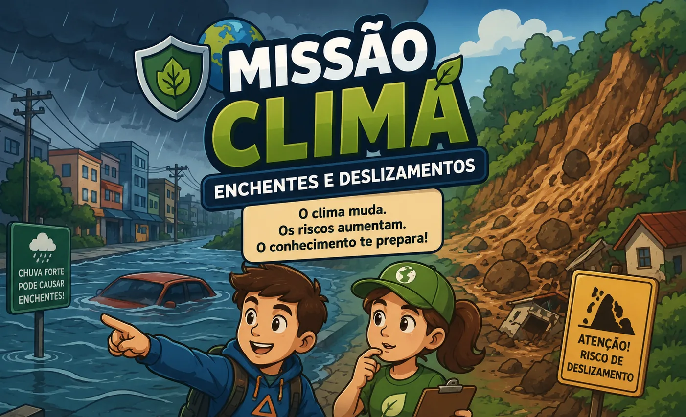

Missão Clima — Enchentes e deslizamentos

São 15 perguntas, em 3 blocos de 5: alertas, preparação e o que fazer durante o evento climático. Sem tempo e sem desconto por erro — a ideia é aprender.
Bloco 1 de 3
Conhecimento salva vidas!
0 de 5
Missão concluída!
0 de 15
Carregando as perguntas…